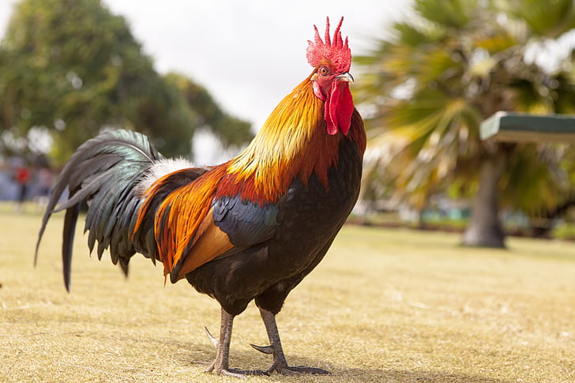

Rooster
The rooster is said to have a crow. This call is often most prominent in the early dawn hours and the sound, which can be played below on the controls has become associated in the English language for the early morning hours.
